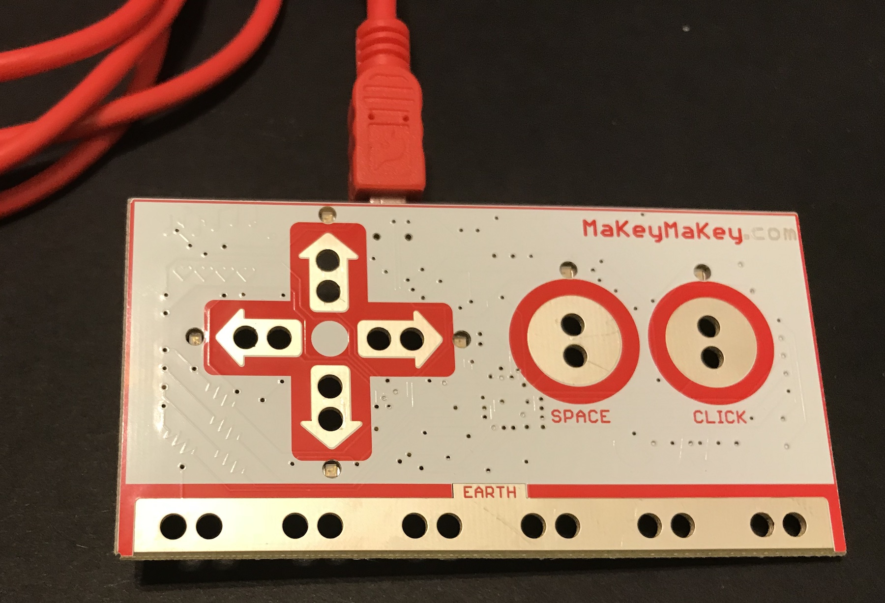

Keyboard Keys Are Switches!
The keys on your computer's keyboard are switches as well. When the key is up, nothing happens. However, when you press a key down, the electric circuit is closed and the computer gets a signal to type that letter.
Replacing the Arrow Keys Using the Makey Makey Board
When you plug the Makey Makey board into your computer, you can make your own switches to activate special keys like the space bar and the arrow keys. To do this, take the wire with the alligator clips on both end and connect one end of it to the holes marked "SPACE". Connect the other end of it to something metal like a coin or a paper clip. Take another wire and connect one end of it to one set of holes marked "EARTH" (also known as "Ground"). Hold onto the other end of the wire. Make sure you have a program open where you can see a space being typed, like a text editor or the URL address area of your browser. Now, when you touch the metal object with the wire in your hand, a space will be typed on the computer.
You can also hold the wire connected to "SPACE" and have a friend hold the wire connected to "EARTH". When you touch hands, a small bit of current flows between you and your friend and you both become a switch.
(WARNING: Never try with any other kind of circuit which has more electricity flowing through it. You can get seriously hurt.)